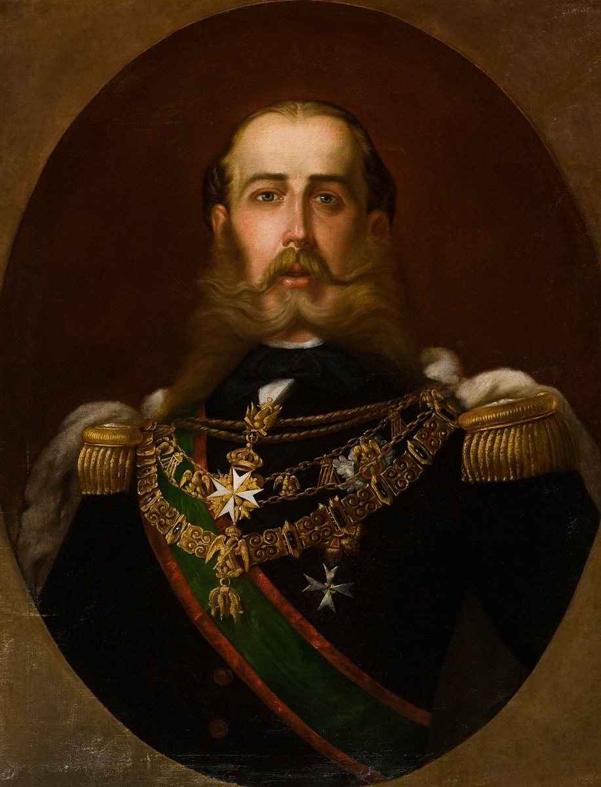

Bienvenido a la página dedicada a la historia de México
Explora datos importantes sobre el Primer y Segundo Imperio Mexicano, sus mapas, eventos y personajes históricos.
Mapa del Primer Imperio Mexicano

El Primer Imperio Mexicano abarcó gran parte del territorio que hoy conocemos como México, aunque con algunas pérdidas territoriales importantes como Texas.
Texas se separó en 1836 tras conflictos con el gobierno mexicano, lo que eventualmente llevó a la guerra entre México y Estados Unidos.
México perdió la mitad de su territorio ante Estados Unidos.
Maximiliano de Habsburgo

Maximiliano de Habsburgo fue el emperador del Segundo Imperio Mexicano entre 1864 y 1867. Su mandato estuvo marcado por conflictos internos y la intervención francesa.
Bandera del Segundo Imperio Mexicano

La bandera del Segundo Imperio Mexicano representaba el gobierno monárquico instaurado por Maximiliano y fue un símbolo significativo durante ese periodo.
Conclusión
La historia del Imperio Mexicano, tanto en su primera como en su segunda etapa, es fundamental para entender la formación del México moderno.
Estos periodos reflejan los retos políticos y territoriales que enfrentó el país, así como las influencias externas que marcaron su desarrollo.